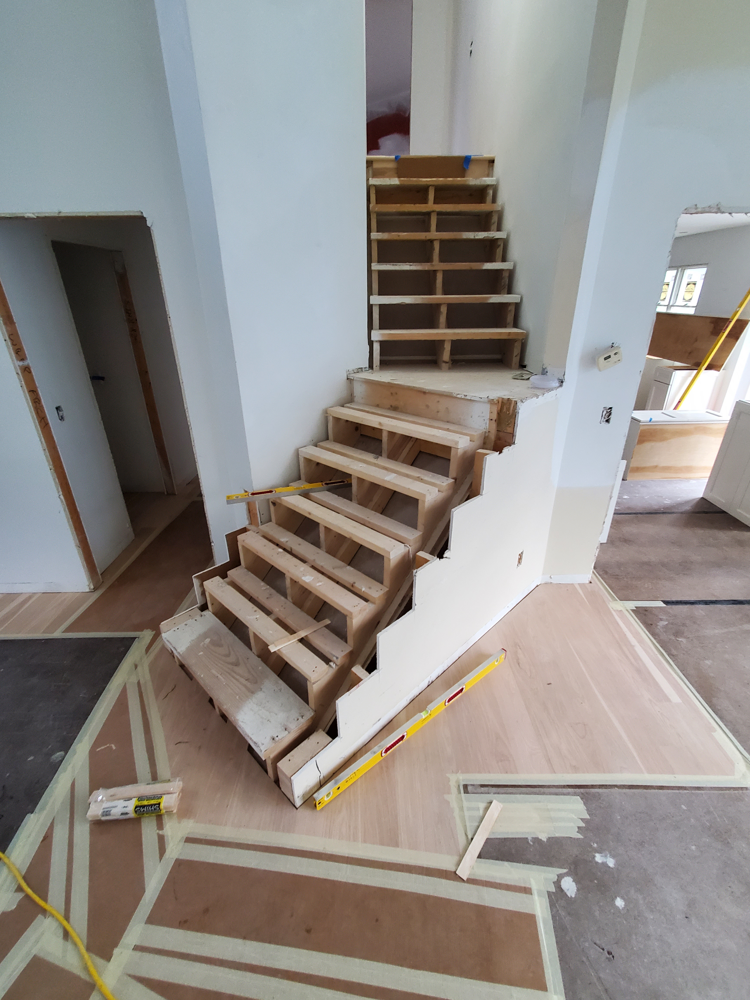
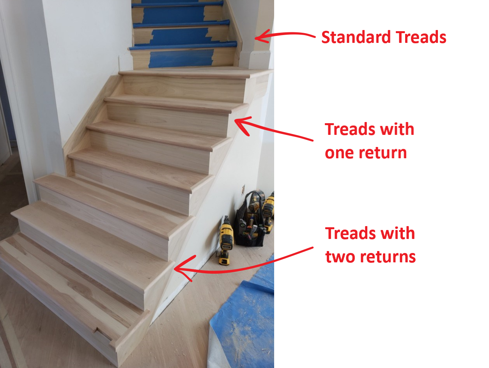
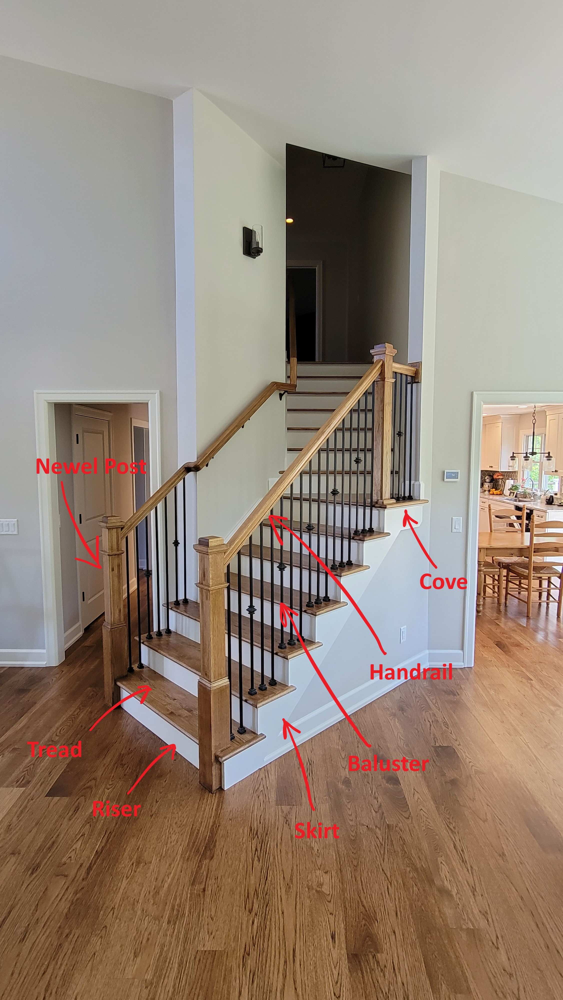

Staircases
Staircases are one area in a residential building governed heavily by code. Many of the common staircase components we use today have been developed to comply with these rules, although some manufacturers, especially of Luxury Vinyl Plank, make and sell non-compliant parts like nosings. Some stair builders prefer to handle the process start to finish so that they can control everything from framing to finish. Others specialize in one or the other.
- Stringers – These are the structural part of the stairs that the treads and risers sit on. These are traditionally cut from dimensional lumber, but some builders use engineered lumber like LVL because it is available in longer or deeper pieces and it is straight and stable.
- Treads – The flat part of the staircase that you step on. These can be boxed in on both sides, return on one side, or returned on two sides. Some more modern stairs call for thick treads up to 3” or 4” so that the gap between them is compliant which allows the builder to omit the riser. These are often paired with a single steel “stringer” to give the staircase a floating appearance.
- Risers – The vertical part behind the tread. These are not strictly required by code but are often installed to comply with the requirement that there may not be any spaces larger than 4”.
- Cove – This is a trim element installed in the corner where the nosing from one tread projects past the riser below, and is both decorative and conceals the gap between the two boards.
- Skirts – These cover the exposed edges of the risers and typically mirror the shape of the stringer in trim on an open set of stairs, or fill the space to the wall on closed stairs.
- Newel Posts – These are decorative and structural and hold the handrail and balustrade or guardrail together.
- Balusters – Individual spindles that make up a guardrail.
- Handrail – The graspable part of the handrail that must be continuous between landings.
Code Requirements (IRC 2021/2024)
- Dimensional Standards
- Minimum Width: 36” clear width at all points above handrail (IRC R311.7.1)
- Maximum Riser Height: 7¾” (IRC R311.7.5.1)
- Minimum Tread Depth: 10” with nosing, or 11” without nosing (IRC R311.7.5.2)
- Nosing Projection: ¾” - 1¼” inch when required (IRC R311.7.5.3)
- Maximum Variation: ⅜” between largest and smallest riser or tread in same stairway (IRC R311.7.5.1, R311.7.5.2)
- Minimum Headroom: 6’8” (80”) measured vertically from sloped line connecting tread nosings (IRC R311.7.2)
- Maximum Total Rise: 12’ 7” between floor levels or landings (IRC R311.7.3)
- Handrail Requirements
- Required: On at least one side when four or more risers are present (IRC R311.7.8)
- Height: 34”-38” above tread nosing to top of handrail (IRC R311.7.8.1)
- Continuous: Must run between landings without interruption (IRC R311.7.8.2)
- Graspable: 1¼” – 2” diameter for circular rails (lots of other options as well, IRC R311.7.8.5)
- Wall Clearance: Minimum 1½” from wall surface (IRC R311.7.8.3)
- Landing Requirements
- Required: At top and bottom of each stairway (IRC R311.7.6)
- Minimum Depth: 36 inches in direction of travel for straight runs (IRC R311.7.6)
- Maximum Slope: 1:48 (2% slope, IRC R311.7.6)
Installation Considerations
- Handrails Encroaching on Width: When building stairs always consider the width of a staircase. For instance, if you design a 3’ wide staircase for a deck, and then need to install handrails on both sides, those handrails may encroach and take up considerable space if they are deck mounted.
- Steep Stairs and Masonry: Stairs with treads shorter than 11” require a nosing, consider this when building masonry steps. It is difficult to form a compliant nosing, so plan to make the treads 11” or more.
- Stringer Problems: In remodeling we often encounter existing stairs with 1 1/16” thick treads but the floor at the top or bottom may be thinner and this is often overlooked. Stringers must account for floor thickness at the top and bottom of the run to comply with the rule that nothing can be more than 3/8 out of tolerance. You may have to trim the bottom of the bottom step or install the stringer lower to account for thinner floor at the top of a run.
- Egress Doors and Landings: At required egress doors a single step down from the threshold to an exterior landing is allowed as long as the door does not swing out over the exterior landing. (IRC R311.3)
- Additional Exterior Doors: At other exterior doors a single step (2 rises and 1 tread) is allowed instead of a full landing as long as the door does not swing out over the step. (IRC R311.3)
Common Challenges and Solutions
- Challenge: Squeaky stairs from loose connections
Solution: Attach treads with construction adhesive and fasteners, consider pocket hole screws from below if possible, trim screws through the top, or 15 gauge nails. - Challenge: Stringer is sagging or bouncy
Solution: Reinforce stringers with 2x4 glued and fastened along the spine or build with LVL - Challenge: Uneven riser heights creating trip hazards, especially in a remodel
Solution: Adjust each step on the stringers by shimming incrementally. An example would be to add 1/16 to the first step, 1/8 to the second, 3/16 to the third, ¼ to the fourth, etc. - Challenge: Old staircase is way out of compliance, cannot be made to satisfy all requirements
Solution: Check with local building authority. There are sometimes provisions for rebuilding existing stairs using the exact specs they presented originally or only improving characteristics if they don’t impact other rules. Appendix J (if adopted in your jurisdiction) can allow you to work on non-compliant staircases without bringing them all the way up to modern specifications. (IRC Appendix J)
Sample Material List
- Steps
- Standard treads (square on both ends)
- Single return treads (treads with one returned side)
- Double return treads (treads with returns on both sides, order exact to size)
- Risers (typically 1x8)
- Skirts (typically 1x12)
- Cove
- Handrail
- Newel post with mounting kit
- Handrail
- Plowed if square wood balusters
- Solid if round balusters
- Handrail brackets
- Wall returns
- Up or down easings
- Balusters
- Shoes/knuckles if metal
- Rosettes
- Double threaded screws



Last revised: 01/20/2026